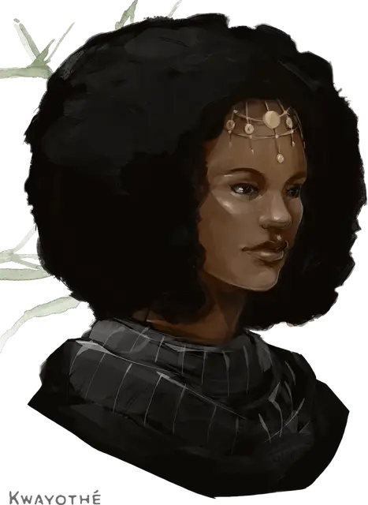

Квайот
Kwayothé
Средний Гуманоид (Женщина чультка человек), нейтрально-злой, именной НИП

Класс Доспеха 13 (кольчужная рубаха)
Хиты 27 (5к8 + 5)
Скорость 30 футов
| мод | спас | ||
|---|---|---|---|
| СИЛ | 10 | +0 | +0 |
| ЛОВ | 10 | +0 | +0 |
| ТЕЛ | 12 | +1 | +1 |
| мод | спас | ||
|---|---|---|---|
| ИНТ | 13 | +1 | +1 |
| МДР | 16 | +3 | +3 |
| ХАР | 13 | +1 | +1 |
Навыки Медицина +7, Религия +5, Убеждение +3
Чувства пассивное Восприятие 13
Опасность 2 (450 опыта)
Бонус мастерства +2
Особенности
Языки. Квайот знает до 2 любых языка.
Особое снаряжение. Квайот обладает кольцом сопротивления к огню [ring of resistance].
Божественная слава. Квайот может бонусным действием потратить одну ячейку заклинания, чтобы её рукопашные атаки оружием магическим образом причиняли цели при попадании дополнительный урон излучением 10 (3к6). Это преимущество длится до конца текущего хода. Если Квайот потратит ячейку 2-го уровня или выше, дополнительный урон увеличивается на 1к6 за каждый уровень выше 1-го.
Использование заклинаний. Квайот является заклинателем 5-го уровня. Её базовой характеристикой является Мудрость (Сл спасброска от заклинания 13, +5 к попаданию атаками заклинаниями). У неё подготовлены следующие заклинания жреца:
• Заговоры (неограниченно): свет [light], священное пламя [sacred flame], чудотворство [thaumaturgy];
• 1 уровень (4 ячейки): лечение ран [cure wounds], направляющий снаряд [guiding bolt], убежище [sanctuary];
• 2 уровень (3 ячейки): божественное оружие [spiritual weapon], малое восстановление [lesser restoration];
• 3 уровень (2 ячейки): духовные стражи [spirit guardians], рассеивание магии [dispel magic].
Действия
Булава. . Рукопашная атака оружием: +2 к попаданию, досягаемость 5 футов, одна цель. Попадание: Дробящий урон 3 (1к6).
Описание
Квайот – спокойная и задумчивая, вызывающая смутную тревогу. Она поклоняется огненному богу Касуту и любит пытать других, особенно с использованием огня и горячего угля. Квайот владеет двумя любовниками: суккубом / инкуб [succubus / Incubus] по имени Иксис и инкубом по имени Индар. Эти существа приняли форму прекрасных чультов.
Квайот выросла на улицах Порт Нянзару, бедной и лишённой всех благ. Она презирает благородны и хочет уничтожить каждого представителя королевской семьи Чульта. Она расценивает Джонси своим смертельным врагом и с нетерпением ждёт, когда старая аристократка умрёт. Хорошо скрывая своё презрение, Квайот вечно вмешивается в бизнес Джонси и дела её семьи. Если Джонси и знает о ненависти со стороны Квайот в сторону её или её семьи, то не показывает этого.
Квайот нанимает торговцев, которые делают свой теж и средство от насекомых. Для большей информации об особых предметах см. «Покупка особых предметов» стр. 32.